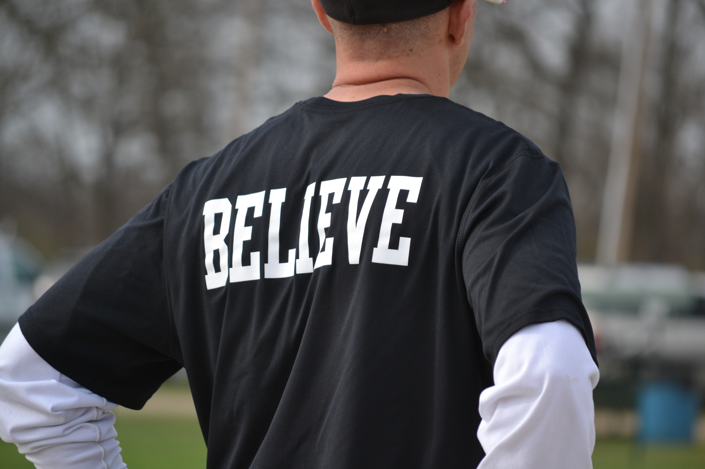
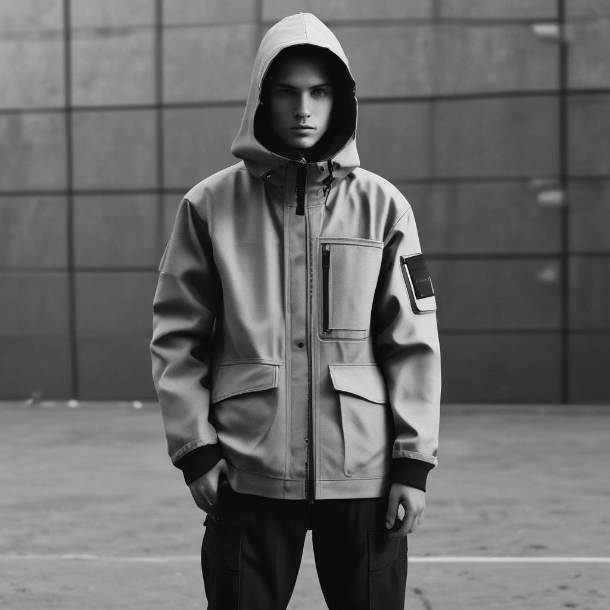
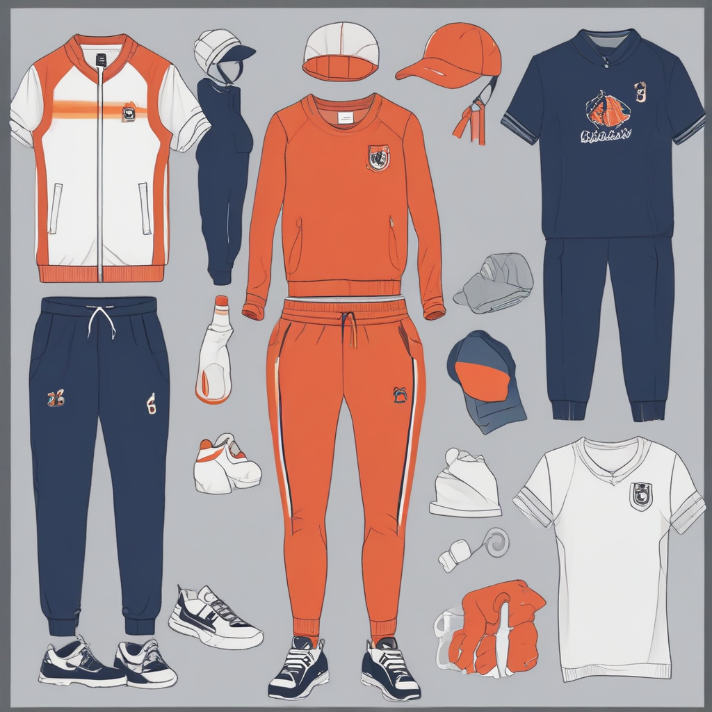
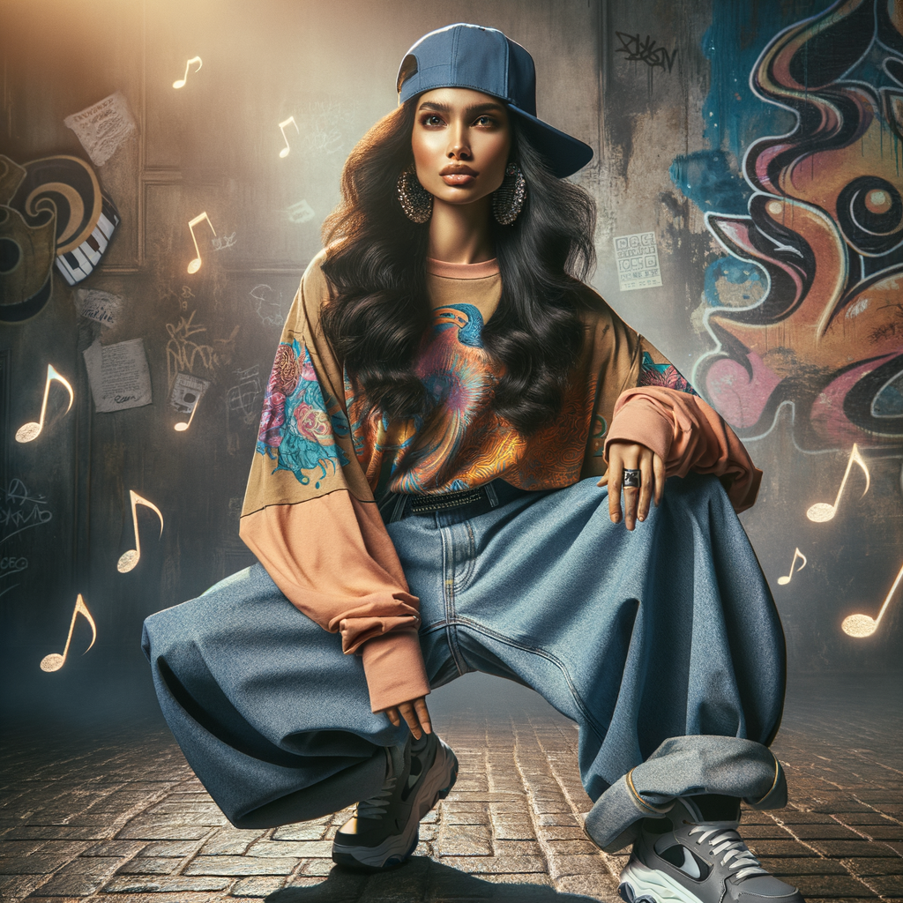

Le streetwear
Cinq sous-categories
| Le urbain classique |
Le skatewear |
Le techwear |
Le sportswear de rue |
Le hip-hop fashion |
| Un style intemporel inspiré par la culture urbaine, comme les jeans, les t-shirts simples et les baskets classques. |
Des vêtements influencés par la culture du skateboard, souvent caractérisés par des coupes amples, des imprimés audacieux et des références au skateboard. |
Une fusion de mode et de fonctonalité, mettant l'accent sur les tissus techniques, les détails utilitaires et les silhouettes futuristes. |
Inspiré par les vêtements de sport, avec les marques de sport populaires ou des collaboration entre marques de mode et de sport. |
Influencé par la culture hip-hop, avec des éléments rels que des survêtements, des hoodies oversize, des casquettes de baseball et des bijoux audacieux. |
|
 |
 |
 |
 |